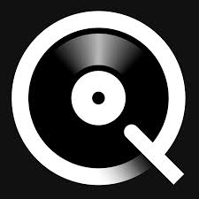
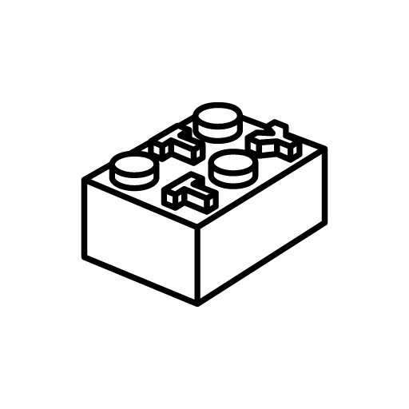

There's some free stuffs on there that's actually cool, but mostly i just use this for buying.
QobuzLossless and hi-res music, on the go (maybe). I mostly use this for looking cus it's too expensive to buy stuffs here.
OtotoyJapanese music store. Provide lossless and hi-res music like Qobuz.
- As the name suggest, Doujin stuffs.
- Features Lossless, hi-res music. Most of them are cd rips.
- Direct download.
- A music blog that features albums from some popular Japanese doujin circles.
- Lossless music (most of them are cd rips).
- Torrent download.
- A massive Touhou music collection.
- Lossless music (cd rips).
- Direct download.
- Games, music, movies? You name it, it exist here (Mostly).
- Lossless, hi-res music.
- Features lots of up-to-date anime music albums.
- Torrent download.
- Features Vocaloid music.
- Lossless and Hi-res music but not all of them.
- Direct download.
- Everyone's favourite place to download game music (Including me lmao).
- Lossless and game ripped music.
- Direct download.
Good'ol VLC.
Plays everything you throw at it, even word files (for some reason)
Audio/Video player.
Lighter than VLC.
Music player.
Support *a lot* of skins and addons.
Music player.
Kinda like foobar but more modernized.
The best free, open source torrent client (straight up, nothing else is better tbh).
Also, you can get some cool skins n shi. Make it your own.
Rip audio files from almost every platforms.
Only able to rip low quality files.
Rip audio and video files from almost every platforms.
The same as lucida, but now with faster speed.
Rip audio and video files from almost every platforms.
The same as lucida, but now with faster speed.
Provides knowledge about terms in audio.
There are much more useful sites, so if you find something useful that I don't have here, please tell me.
Made with by alice. Based on jun's website (cus that web look bad sorry jun).